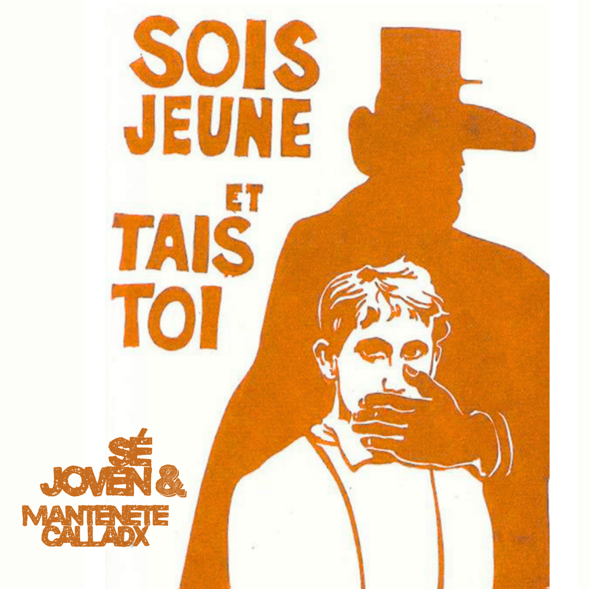

En mayo de 1968, el malestar estudiantil en la nueva y "plebeya" sede de Nanterre (Universidad de París) encendió la chispa de una rebelión que paralizó Francia. Más allá de las barricadas y las huelgas obreras, el Mayo Francés fue, en esencia, una profunda crisis del modelo universitario tradicional.

Así el mayo francés se configuró, no sólo como un mero estallido juvenil espontáneo, sino el detonante de una discusión estructural sobre la función social de la universidad. Preguntas como ¿para quién forma la universidad? ¿cómo se construye el saber? ¿quién participa en las decisiones? atravesaron las aulas de Nanterre y luego las calles de París, y hoy resuenan con una actualidad inquietante.
¿Qué decía ese manifiesto universitario?
A través de asambleas, grafitis y la toma de la Sorbona, los estudiantes (liderados por figuras como Daniel Cohn-Bendit) y jóvenes docentes plantearon una crítica radical que resuena hasta hoy. La publicación de la UNM sistematiza cuatro ejes centrales de aquella rebelión intelectual y política:
1. Contra la universidad clasista y jerárquica: Denunciaron una enseñanza al servicio del mercado (el "Plan Fouchet" que pretendía acercar la universidad a la empresa) que reproducía las desigualdades sociales. El saber no era neutral ni debía ser un privilegio de las clases pudientes. Como escribieron en las paredes de la Sorbona: "Seamos realistas, pidamos lo imposible".
2. Por la participación efectiva: Exigieron el fin del autoritarismo dentro de las aulas y una gestión compartida, donde estudiantes y docentes no titulares tuvieran voz en las decisiones institucionales. La consigna "Sé joven y cállate" era la cara de una represión simbólica que debía ser derribada con democracia directa.
3. El fin de la falsa neutralidad: Impugnaron la separación entre saber y poder, entre teoría y práctica. La universidad no podía ser una torre de marfil; debía comprometerse con la realidad social y política. Los estudiantes de Nanterre proclamaron la "Universidad Crítica" siguiendo el modelo berlinés de la "comuna estudiantil".
4. La imaginación al poder: Frase emblema del movimiento. Reivindicaron la creatividad, la interdisciplina y la crítica cultural (desde el situacionismo hasta los poetas malditos) como herramientas de transformación, oponiéndose a la uniformidad de la sociedad de consumo. "Debajo de los adoquines, la playa" recordaba que otra vida era posible.
El Mayo Francés también dejó una lección sobre los límites de la protesta cuando no logra articularse en transformaciones institucionales duraderas. Aunque los gaullistas ganaron las elecciones posteriores, el movimiento provocó la renuncia de De Gaulle al año siguiente y forzó reformas universitarias: se eliminaron los cupos, se descentralizó la Universidad de París y se crearon nuevas sedes como Vincennes (hoy Paris VIII) y Paris X-Nanterre, hijas directas de aquella ebullición.
A 50 años de aquellos días, las premisas del Plan Fouchet siguen vigentes en gran parte del mundo. Por eso, la conmemoración no es sólo un ejercicio arqueológico, sino una herramienta de lucha presente. La consigna sigue siendo la misma: la universidad debe contribuir a la realización colectiva de los pueblos, y eso exige memoria, rebeldía y organización.